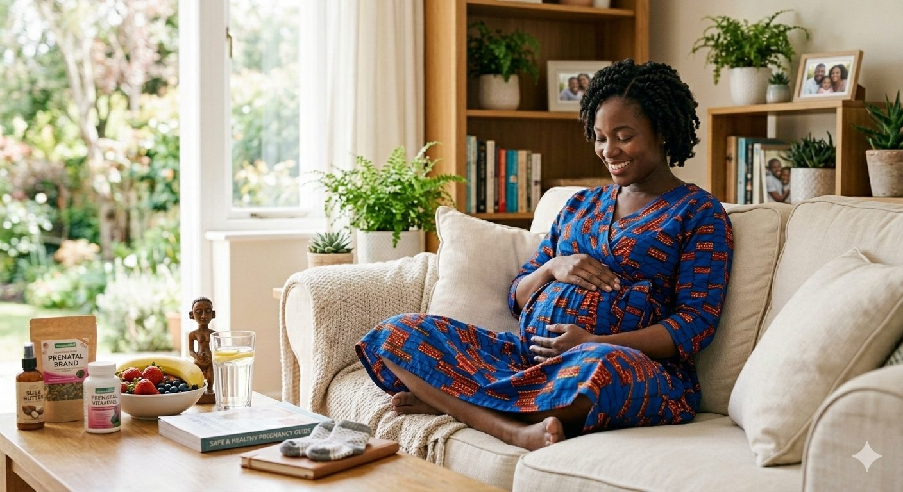
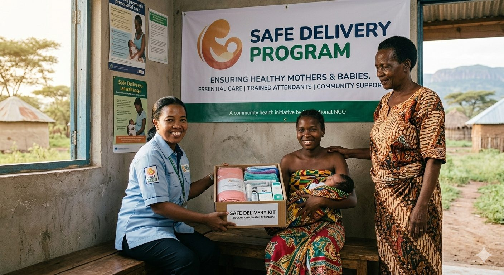
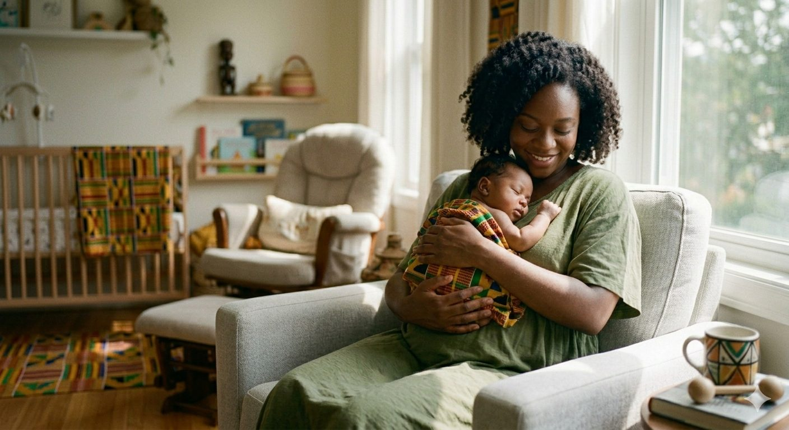

Stage 1
SafePregnancy
Smart reminders, home health visits, health education, birth planning, nutrition counselling and mental wellbeing support.
Explore SafePregnancyThree connected programs and simple, low-tech tools that keep every mother supported.
Each program is delivered by the same trusted youth navigator, so mothers never start over.

Smart reminders, home health visits, health education, birth planning, nutrition counselling and mental wellbeing support.
Explore SafePregnancy
A 24/7 helpline, emergency transport coordination, hospital referral and birth advocacy when every minute counts.
Explore SafeDelivery
Newborn checks, breastfeeding support, maternal mental health, immunisation reminders, recovery care and family planning.
Explore SafePostpartumUnlike rotating clinic staff, your dedicated SafeMom navigator stays with you from enrolment through delivery and recovery.

Practical, scalable tools designed for resource-limited settings. They work anywhere, with no smartphone or internet required.
Automated reminders for prenatal visits, immunisations and health education on any basic phone.
Connects a mother with transport and a health facility within minutes when emergencies arise.
Equips young people to become effective maternal health navigators through digital and in-person learning.
Sponsor a mother, volunteer, or partner with us to expand safe maternal care.